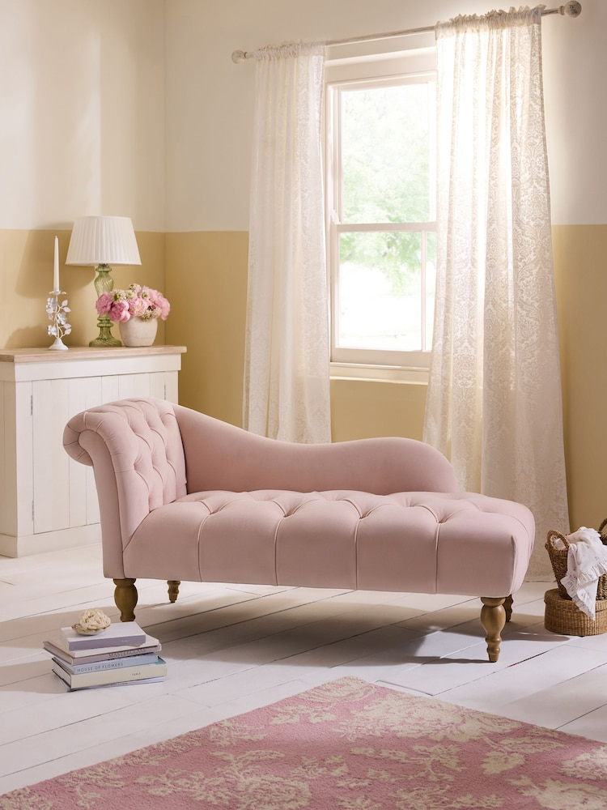
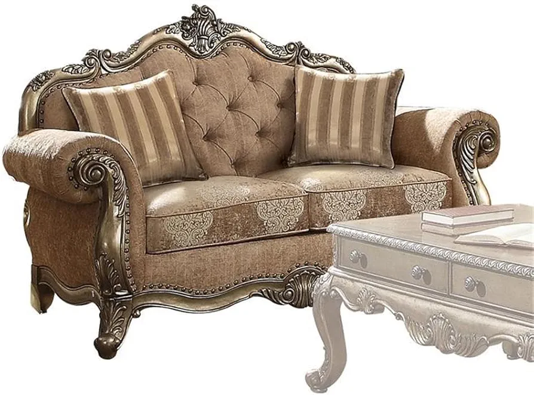
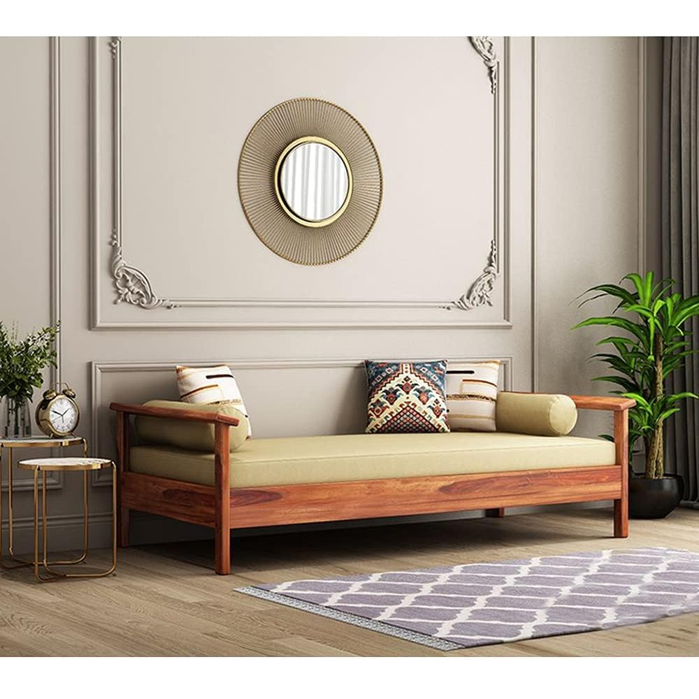

Upgrade your home with the precision of Interwood’s world-class sofa designs. Combining state-of-the-art technology with timeless artistry, our sofas offer unmatched durability and ergonomic support. Each piece is a symbol of structural integrity and refined taste.

A Chaise Lounge is a long, elegant chair that allows you to fully stretch out your legs while resting comfortably. Originating from French design, it is known for its graceful curves and luxurious feel. It may feature one arm, two arms, or be completely armless depending on the style.
Key Features:
Elongated seat for full leg support
Available with one arm, two arms, or armless
Perfect for reading corners and lounging
Adds a classic and elegant touch to any room
Available in fabric, leather, and velvet

The English Rolled Arm Sofa is a timeless classic recognized by its low, softly rounded arms and deeply cushioned seats. It brings a cozy, country-house warmth to any living space and is perfect for those who love a traditional, comfortable style. Upholstered in rich fabric or velvet, it becomes the heart of any room.
Key Features:
Low and gently rounded rolled arms
Deep, plush cushions for maximum comfort
Classic country-house and heritage style
Available in fabric, velvet, and leather
Ideal for traditional and formal living rooms

A Divan Sofa is a traditional backrest-free seating piece rooted in Eastern and Ottoman culture. It is usually placed against a wall, with large decorative cushions and bolsters used as a back support. Its open and flexible design makes it a versatile and culturally rich addition to any lounge or sitting area.
Key Features:
No fixed backrest — uses cushions instead
Placed against a wall for support
Rooted in Eastern and Ottoman design
Spacious and flexible seating
Ideal for traditional and cultural interiors